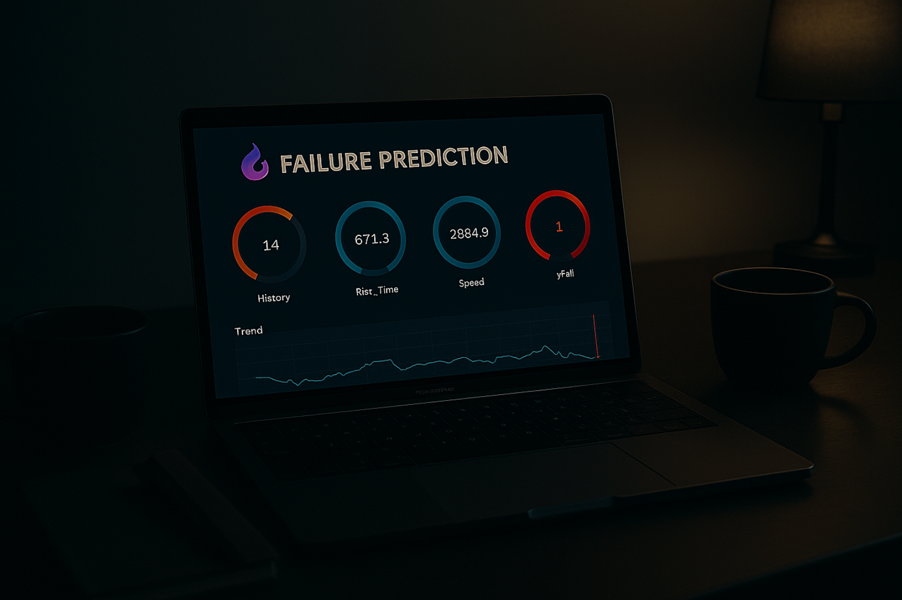
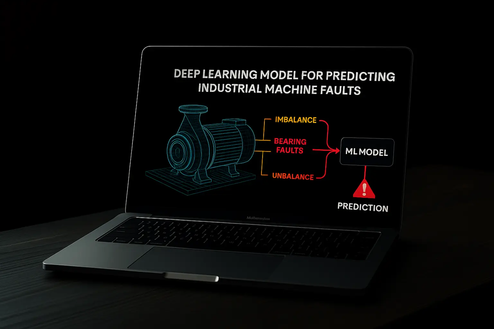
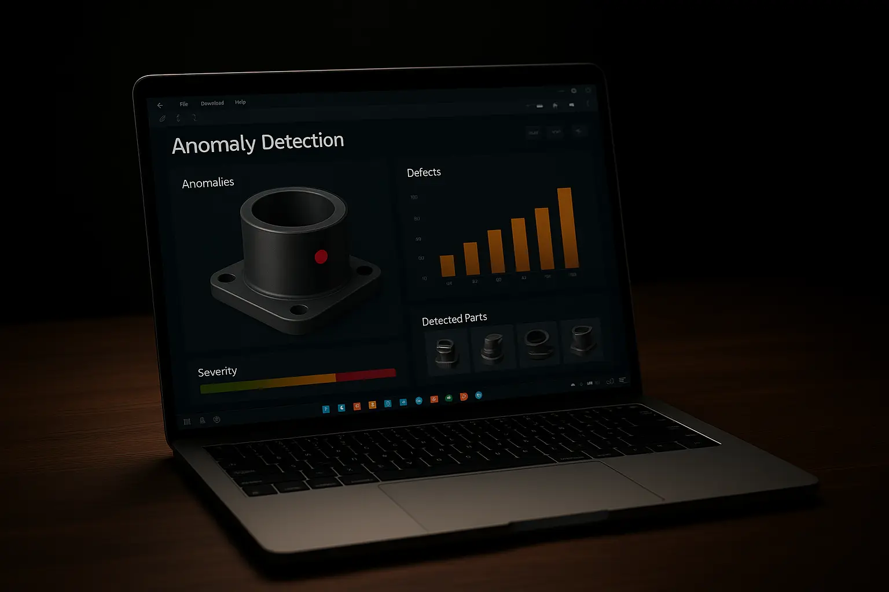
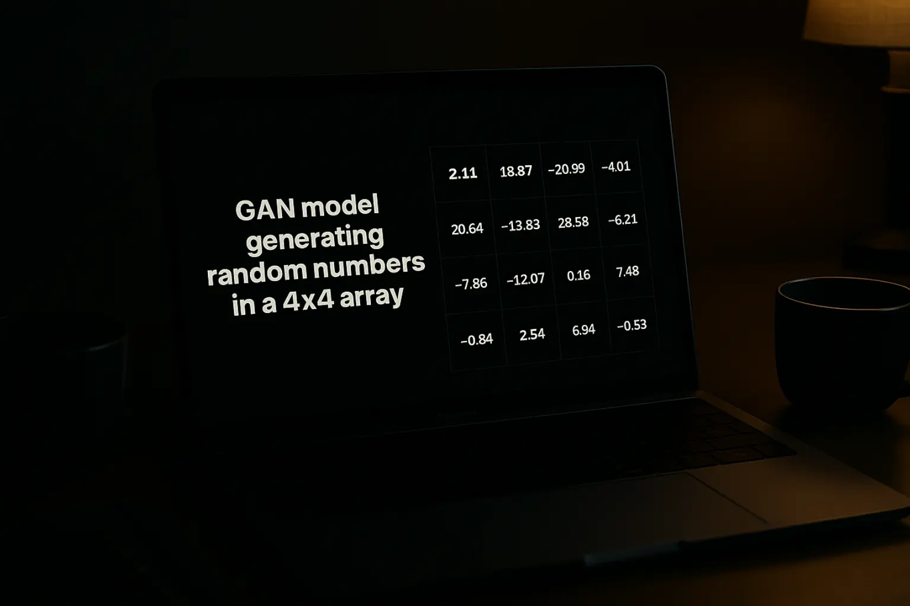

AI Engineerbuilding real-world ML systems
I design and deliver end-to-end AI applications, from computer vision and LLM systems to production-ready APIs and interactive web apps.
Live demos included across the portfolio. Not just code samples.

I design and deliver end-to-end AI applications, from computer vision and LLM systems to production-ready APIs and interactive web apps.
Live demos included across the portfolio. Not just code samples.
End-to-end AI systems with live demos.

Detect anomalies in semiconductor manufacturing data and monitor system health in real time, enabling faster issue detection and process stability.

Predict equipment failures using time series sensor data and LSTM models, enabling proactive maintenance and more reliable industrial operations.

Detect defects in industrial products using deep learning segmentation models, enabling automated and consistent quality inspection workflows.
Monitor and predict liquid flow rates in offshore risers using an LSTM model, simulating a live telemetry stream with P05/P95 threshold-based anomaly detection.
Ask complex research questions to an autonomous AI agent that orchestrates searches across ArXiv, Wikipedia, DuckDuckGo, and a scientific calculator to produce cited, structured responses.

Generate realistic handwritten digit images using a GAN trained on MNIST, demonstrating adversarial training dynamics, convergence behaviour, and synthetic data generation.
Sistemas de IA, LLMs e stack de implantação
AI Engineer focused on building and deploying real-world machine learning systems.
I design end-to-end AI applications across computer vision and LLM-based systems, including APIs, real-time inference pipelines and interactive frontends.
My work includes systems like industrial anomaly detection, document-based AI assistants (RAG) and real-time computer vision applications, all available through live demos.
I focus on practical impact, building AI systems that are reliable, scalable and ready for real-world use.
Open to AI Engineering roles, freelance projects, and collaborations. If you're building something with machine learning, computer vision, or LLMs, I'd be glad to connect and contribute.